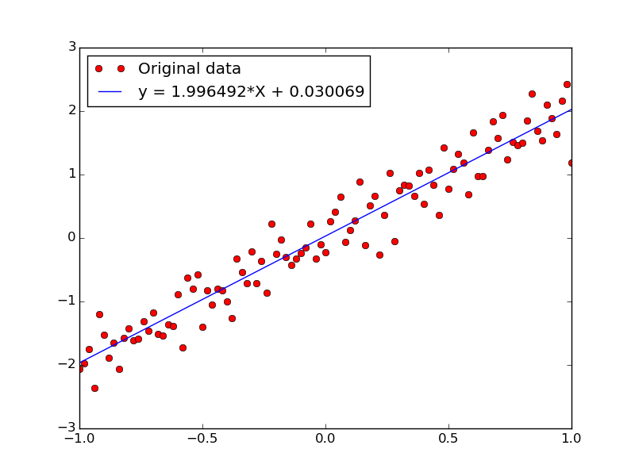

Random (and largely incomplete) thoughts/snippets on various ML topics
Thoughts
Some Notes on Kolmogorov Complexity, the Algorithmic Markov Condition, and Causality (WIP)
Causal Graphs and Sources of Bias
Notes on Likelihood Ratio Policy Gradients for Reinforcement Learning
Notes on Fisher Information (under construction)
Notes on Policy Gradients (Trust Region Policy Optimization, under construction)
Notes on Policy Gradients (under construction)
Notes on Noise Contrastive Estimation (NCE)
Notes on Maximization of Inner Products over Norm Balls
Notes on Adversarial Examples
Basic probability stuff that everyone likely should know
Notes on Variational Autoencoders
Notes on policy gradient and the log derivative trick for reinforcement learning (under construction)
LDA Intro/overview (also under construction)
Brief intro to auto-encoders (I would explain this differently/use different notation these days)
Pretty old random idea
How exactly does word2vec work?
Why is minimizing error the same thing as maximizing likelihood is the same thing as finding a low energy state...
A bit on sequence to sequence learning (e.g Google Inbox smart reply)
Code Snippets
VariationalAutoencoder
(VAE) and other examples written in tensorflow. An example reconstruction of MNIST digits by the VAE is shown below.
.
lr.py:
Very simple linear regression in tensorflow (made up dataset)

k-prototypes.py:
Categorical Clustering for Netflow data
Softmax regression
on
MNIST
in tensorflow
PCA + K-Means
(Spark/MLlib/Scala) on the
KDDCUP99 data set
Last Update: 2018.08.09 by
dmm@1-4-5.net
 .
.